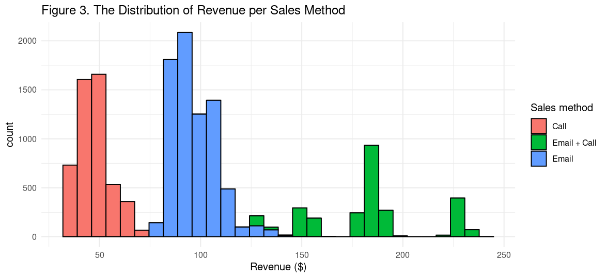
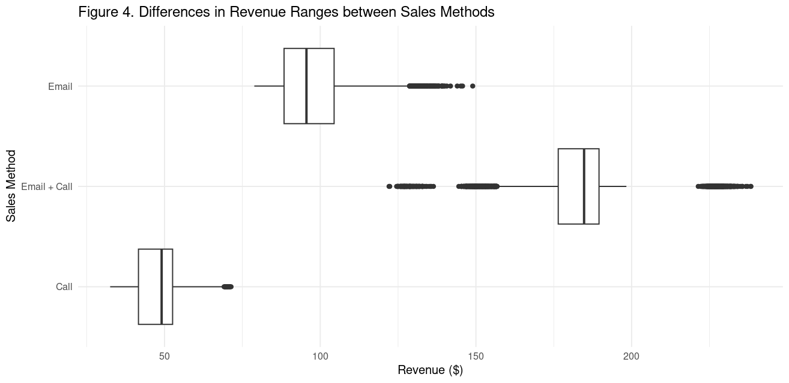
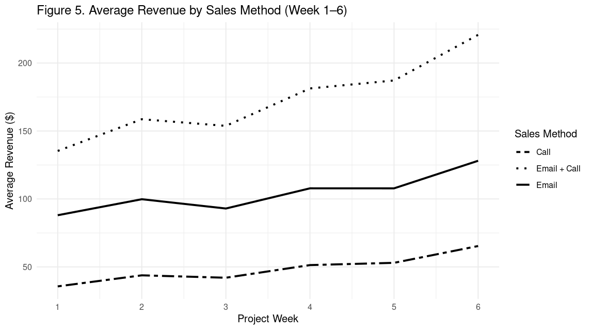

Revenue by Sales Method
Overview
This report analyzes revenue performance for the new product line across three sales methods—Email, Call, and a Combined Email+Call strategy. It uses data from the latest six-week project period to inform these comparisons. The report is divided into four sections:
Data Validation: Ensures completeness and accuracy of the underlying dataset.
Exploratory Analysis: Identifies the distribution of revenue and comparative performance of each sales method.
Metric Recommendation: Proposes a simple KPI for ongoing monitoring.
Recommendations and Conclusion: Offers actionable insights to optimize sales resource allocation.
By following this framework, the analysis will equip leadership with clear, data‑driven guidance on which sales methods to prioritize moving forward.
I used R to extract key insights from the data. For more details, you can check out the complete R code on my GitHub repository.
Data Validation
Overview of Potenital Issues
Missing Values
- Checked all variables for missing values: only the revenue variable contains them (1074 of 15000 records, 7.16%).
Out‑of‑Range Values
- The years_as_customer variable has a maximum of 63, yet the company is only 41years old—indicating at least one typo in entries.
Detailed Variable Checks
In this step, I examine specific variables in greater detail—those whose potential issues may not be evident from the overall summary.
- years_as_customer:
- Identified two customers with impossible loyalty spans (47 and 63 years).
- Next step: flag and verify these records, then either correct or remove.
- sales_method
- Found inconsistent labeling: e.g., both “Email” and “email”, “Email+Call” and “email+call”.
- Next step: standardize to the following categories: “Email”, “Call”, “Email+Call”. Also convert to a factor data type for the analysis.
- state
- All values conform to the expected list of U.S. states. No issues detected.
- customer_id
- All values are unique; no duplicate IDs present.
Revenue by Sales Method
To assess how revenue varies across methods, I generate a histogram highlighting distributions of revenue brought in by individual sales methods (Figure 3). I also generate a boxplot to highlight outliers (Figure 4). Summary statistics by sales method are as follows:
- Call
- Range: 32–71 dollars
- Mean: 48
- IQR: 11 (tight spread)
- Conclusion: Call deals are modest and predictable, with only a few high‑end outliers (Figure 4).
- Range: 79–149 dollars
- Mean: 97
- IQR: 16 (moderately wider than Call)
- Conclusion: Email generates higher average revenue and occasional very large deals, indicating more upside potential.
- Emai+Call
- Range: 122–238 dollars
- Mean: 184
- IQR: 13
- Conclusion: This combined approach nearly doubles Email revenue and quadruples Call revenue on average. It also exhibits both low‑end and high‑end outliers, suggesting variable performance that can both under‑ and over‑deliver relative to its mean.
Statistical validation: I also conduct a one-way ANOVA and subsequent Tukey HSD post-hoc tests on individual revenues by sales method. All pairwise differences are statistically significant:
- Email+Call outperforms Email‑only and Call‑only (p<0.001).
- Email‑only also generates significantly more revenue than Call‑only (p<0.001).
These results confirm the descriptive findings. Note, however, that this analysis does not factor in varying time investments per sales method—see the metric definition section for an efficiency‑adjusted metric.
 
Revenue Trends Over Time
To assess how revenue evolves over time for each sales method, I plot a grouped line chart showing average revenue per week across the six-week project duration (Figure 5). As Figure 5 demonstrates, all three methods show a steady upward trend, with only a minor dip between Weeks 2 and 3. Notably, Email+Call shows a steeper increase than the other two methods.
Summary of trends:
- Call: rises from approx. 35 to 65 dollars (+30)
- Email: grows from approx. 95 to 129 (+34)
- Email+Call: grows from approx. 135 to 225 (+90)
The Email+Call method not only starts and ends at the highest revenue levels, but also delivers the largest absolute gain. This demonstrates the value of combining email with a brief (10‑minute) follow-up call—an approach that appears to compound its effect as the campaign progresses.

Metric Definition
I propose the team to track the Revenue-Per-Minute(RPM) Efficiency metric. This metric is intuitive, easily comparable over time and accounts for resource allocation and efficiency.
- Metric definition: Revenue-Per-Minute (RPM) = Average Revenue/Average Team Time per Customer for each sales method (minutes).
- How to use it:
- Each week (or month), re‑compute RPM for each method (or just Email and Email+Call, if the Call-only is retired, see recommendations) using the same formula, to reassess method profitability.
- Plot the results over time to revisit resource allocation.
- Set an internal target (e.g., maintain RPM ≥18 dollars/min for Email+Call) and trigger a review if it falls more than 10% below baseline.
Based on the current data, I already estimated initial values of the metric for each sales method:
- Call only: On average brings in 47.70 dollars and costs ~30 min/customer, yielding $1.59 per minute.
- Email only: On average brings in 97.00 dollars, costs ~2.5 min/email, yielding $38.80 per minute. Very high return on investment (ROI).
- Email+Call: On average brings in 184.00 dollars, costs ~10 min/customer, yielding $18.40 per minute.
Final Summary and Recommendations
The analysis shows that—while all methods grow revenue—Email+Call delivers the highest absolute returns, and Email only offers exceptional efficiency at scale. In contrast, Call only is both time‑intensive and low‑yield.
Recommendations:
- Retire “Call only.” Its $1.6/min ROI is the weakest, requiring 30 minutes for just 47.7 dollars.
- Default to “Email only.” Two quick emails generate nearly 100 dollars with virtually no manual effort (~$38.8/min).
- Deploy “Email+Call” selectively for high‑potential deals. A brief 10‑minute call on top of an email nearly doubles revenue (to 184 dollars) while maintaining strong efficiency (~$18.4/min).